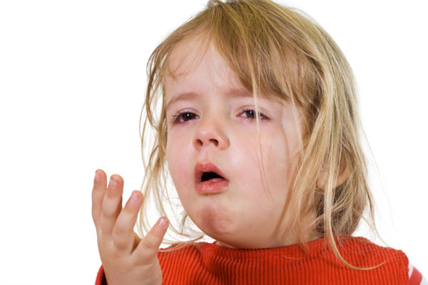

Croup and Epiglottitis
Croup and Epiglottitis
Croup is a viral infection of the voice box and windpipe and epiglottitis is a bacterial infection of the epiglottis, the 'flap'-like valve that guards the airway.
Both croup and epiglottitis are conditions that mainly affect children.
Croup
The onset of croup is slow, usually after another illness, such as a cold or a sore throat. Croup will normally last three to four days and the child may have repeated attacks. Croup is often a mild illness but can get worse quickly, and is often worse at night.

Signs and Symptoms
 appear worse at night
appear worse at night
 cold-like symptoms
cold-like symptoms
 hoarse, 'barking' cough (like a seal)
hoarse, 'barking' cough (like a seal)
 pale, cool, clammy skin
pale, cool, clammy skin
 may have a slight temperature
may have a slight temperature
 may have breathing difficulty
may have breathing difficulty
 may have inspiratory or expiratory stridor (a shrill, harsh sound)
may have inspiratory or expiratory stridor (a shrill, harsh sound)

Care and Treatment
 reassure the child
reassure the child
 manage any fevers – the doctor may direct you to give them paracetamol if they have a fever. Follow the instructions on the packet regarding dose
manage any fevers – the doctor may direct you to give them paracetamol if they have a fever. Follow the instructions on the packet regarding dose
 give frequent drinks to keep the child well hydrated
give frequent drinks to keep the child well hydrated
 if there is severe breathing difficulty, or, if the child is distressed, seek medical assistance
if there is severe breathing difficulty, or, if the child is distressed, seek medical assistance
 DO NOT examine the throat
DO NOT examine the throat
 DO NOT use steam as it does not help and may lead to accidental burns
DO NOT use steam as it does not help and may lead to accidental burns
Croup can quickly become serious, so do not hesitate to get medical help. There is effective treatment for severe episodes of croup.
Humidification of the air is often recommended for croup but there is no information to prove that it has any benefits and increases the risk of burns from the hot water or steam.
Epiglottitis
Epiglottitis is usually due to infection by the Influenza B bacteria. It is a life-threatening condition. It affects children in the two to seven year range with four years the most common age affected.
The infection of the epiglottis causes a gradual obstruction of the airway by the swollen tissue.

Epiglottitis is an emergency and requires urgent ambulance transport to hospital.

Signs and Symptoms
 skin often flushed and a high temperature
skin often flushed and a high temperature
 child is quiet, doesn't cough, leans forward and won't talk
child is quiet, doesn't cough, leans forward and won't talk
 appears anxious
appears anxious
 salivary drool, unable to swallow
salivary drool, unable to swallow
 rapid onset over one or two hours
rapid onset over one or two hours
 child usually has an expiratory 'purr', though other noisy breathing is common
child usually has an expiratory 'purr', though other noisy breathing is common
Care and Treatment
 call Triple Zero (000) for an ambulance
call Triple Zero (000) for an ambulance
 reassure the child
reassure the child
 keep calm
keep calm
 allow the child to sit in a position of comfort, usually leaning forward and nursed, while in the sitting position, by a parent.
allow the child to sit in a position of comfort, usually leaning forward and nursed, while in the sitting position, by a parent.
 DO NOT examine the child's throat as this may cause complete blockage
DO NOT examine the child's throat as this may cause complete blockage
When to seek help
If the child has any of the following, go to a doctor or hospital straight away:
 The child's breastbone is drawn in when they take a breath.
The child's breastbone is drawn in when they take a breath.
 The child becomes pale or blue (cyanosed).
The child becomes pale or blue (cyanosed).
 The child becomes restless, irritable and/or delirious.
The child becomes restless, irritable and/or delirious.
 The child has a high temperature and is dribbling.
The child has a high temperature and is dribbling.
 The child has breathing difficulties.
The child has breathing difficulties.
 The child is not drinking enough;
The child is not drinking enough;
 You become concerned for any other reason.
You become concerned for any other reason.